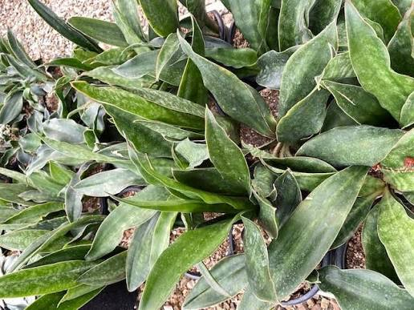
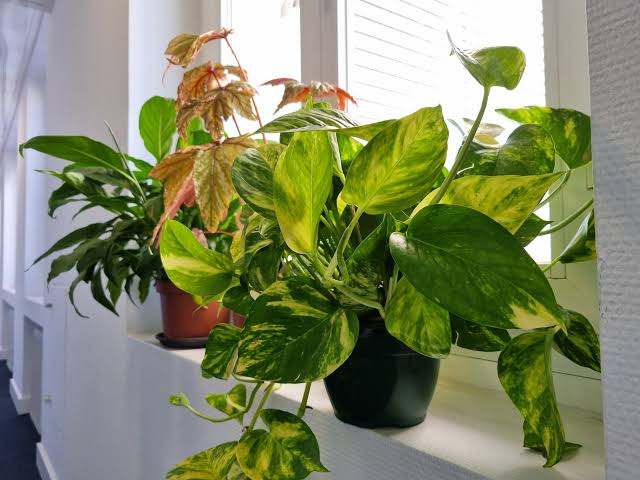
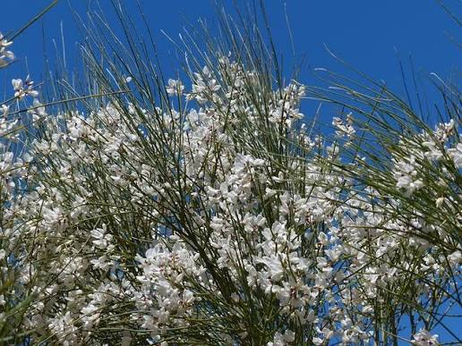
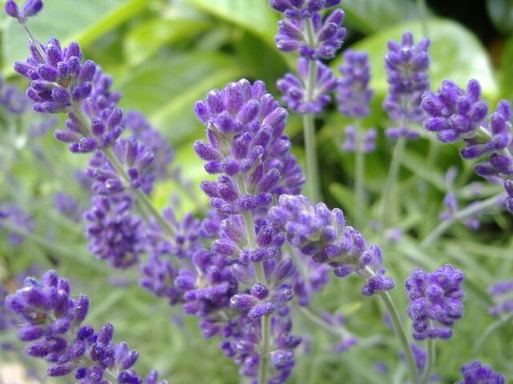

Interior
Monstera deliciosa
Planta tropical de hojas grandes que prospera con luz indirecta y ambientes cálidos.
Descargar información PDFCatálogo botánico
Un espacio para conocer y cuidar nuestras plantas.
Bienvenido al jardín
Explora una selección de especies de interior y exterior. Cada ficha incluye una imagen y un documento PDF con información adicional para facilitar su cuidado.
Ver catálogoInformación
Jardín Verde es un catálogo estático pensado para organizar y consultar información básica sobre las plantas de un jardín. Las especies están clasificadas en dos grupos: plantas de interior y plantas de exterior.
El sitio utiliza HTML5 semántico y CSS3, priorizando una navegación sencilla, un diseño adaptable y características de accesibilidad.
Catálogo
Selecciona una categoría para filtrar las plantas sin necesidad de JavaScript.
Interior
Planta tropical de hojas grandes que prospera con luz indirecta y ambientes cálidos.
Descargar información PDF
Interior
Especie resistente y de bajo mantenimiento, adecuada para distintos espacios interiores.
Descargar información PDF
Interior
Planta trepadora o colgante de crecimiento rápido, muy utilizada en interiores luminosos.
Descargar información PDF
Exterior
Arbusto de exterior caracterizado por sus ramas verdes y sus numerosas flores amarillas.
Descargar información PDF
Exterior
Planta aromática que disfruta de lugares soleados y suelos con buen drenaje.
Descargar información PDF
Exterior
Arbusto ornamental de floración vistosa que requiere buena iluminación y cuidados periódicos.
Descargar información PDFResponsable
El sitio es mantenido por la persona responsable del cuidado del jardín y de la actualización del catálogo de plantas.
Responsable del mantenimiento del jardín, la organización de las fichas y la actualización de la información.
Contacto
Completa el formulario para realizar una consulta relacionada con el jardín o las plantas del catálogo.